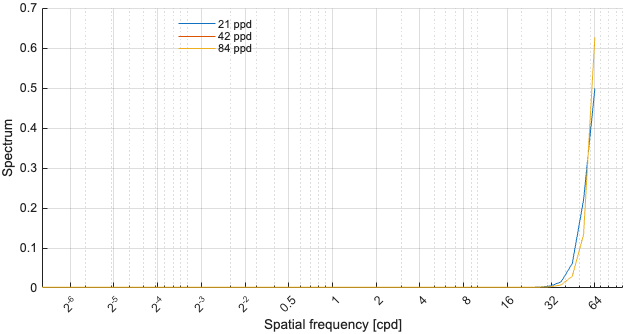
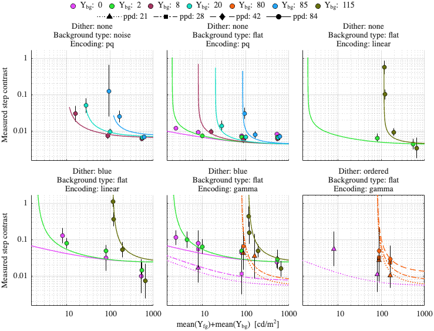
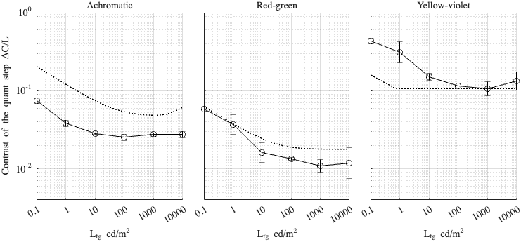

Fitting config: dither_spd, model: mutual_masking_inv_f
Fitting error (RMSE): 0.873441
Model parameters
p.beta = 0.270872; p.gs_num = [ 0.100859 0.00136475 0.999785 ]; p.noise_params = [ 1.30236 1.15807 0.810366 ]; p.dither_amp_params = [ 3.00256 0.769707 ]; p.blue_dither_params = [ 2.82311 8.71953 0.001732 0.791805 ];
Model components
Blue noise dither spectrum

Dataset: [ar2025]
Scaling factor: 3.62525

Dataset: [kim2020]
Scaling factor: 18.3082
